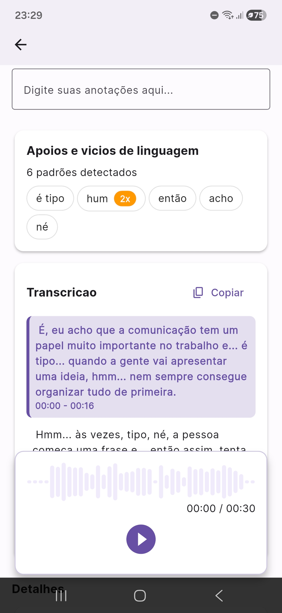
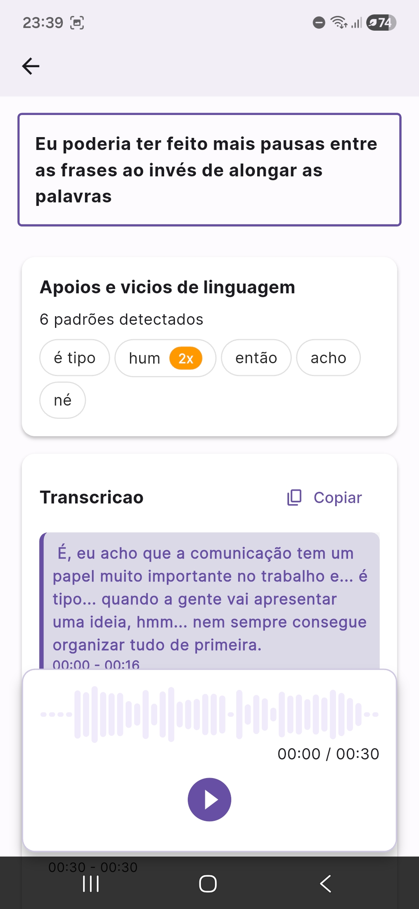
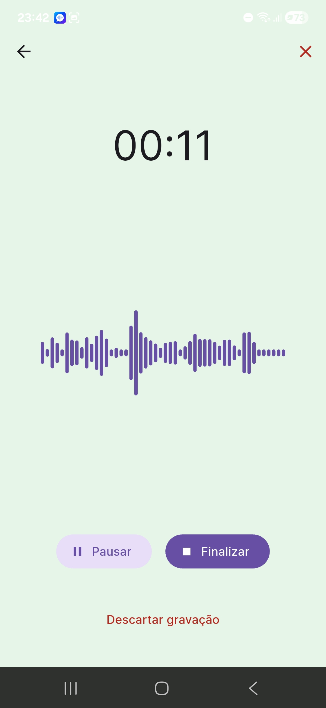
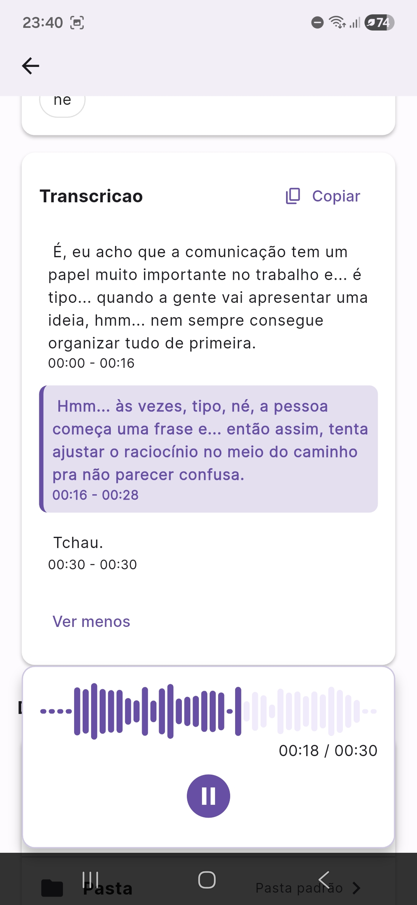
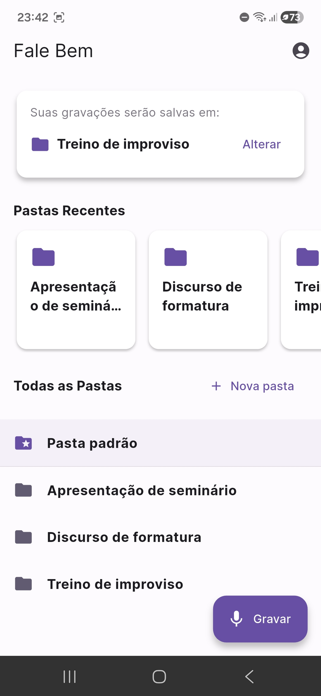

Grave sua voz.
Veja seus vícios.
Fale melhor.
O Fale Bem detecta automaticamente seus vícios de linguagem como "né", "tipo", "hum", "então".


O Fale Bem detecta automaticamente seus vícios de linguagem como "né", "tipo", "hum", "então".

Você usa "né" 12 vezes num discurso e não percebe. O Fale Bem percebe — e mostra exatamente quantas vezes cada padrão apareceu.
Após cada gravação, o app entrega a lista dos vícios detectados, a transcrição completa do áudio e um espaço para anotar o que quer melhorar.

Sem configuração, sem teoria. Você grava, o app analisa e você melhora.
Fale sobre qualquer tema — uma apresentação, uma opinião, um texto livre. O app captura e organiza na pasta certa.
Transcrição completa + detecção automática dos seus vícios de linguagem. Você vê quais padrões aparecem e com que frequência.
Registre o que percebeu e o que quer mudar. Compare com gravações anteriores e veja a evolução acontecer de verdade.
Reuniões, apresentações, entrevistas.
Seminários, defesas, TCCs.
Podcasts, vídeos, lives. Vícios de linguagem diminuem retenção e credibilidade — identificar é o primeiro passo para eliminar.
Comunicação mais limpa, mais direta, mais confiante.
O app identifica seus padrões de fala — "né", "tipo", "hum", "então", "acho" — e mostra quantas vezes cada um apareceu.
Cada gravação vira texto. Você vê o que falou palavra por palavra, Você lê, revisa e identifica exatamente onde estão os pontos de melhora.
Registre reflexões e metas diretamente na gravação. Transforme cada sessão num ciclo de aprendizado ativo.
Separe seus treinos por contexto: apresentação, improviso, discurso, reunião. Cada objetivo, uma pasta.
Todas as gravações ficam salvas com data e duração. Compare antigas com recentes e veja o progresso concreto.
Seus áudios são enviados para análise e depois descartados. Nenhuma gravação é armazenada em servidores.
Interface limpa, análise poderosa, evolução visível.

Grave em segundos
Vícios detectados na hora

Transcrição automática

Organize por objetivo
Após cada gravação, o Fale Bem transcreve o áudio automaticamente e analisa o texto em busca de padrões — palavras de preenchimento como "né", "tipo", "hum", "então", "acho" e outros. Você vê a lista dos padrões encontrados e quantas vezes cada um apareceu.
Para qualquer pessoa que queira falar melhor — profissionais, estudantes, criadores de conteúdo, quem tem timidez ao falar em público ou qualquer um que queira se comunicar com mais clareza e menos vícios de linguagem.
Sim, o Fale Bem tem versão gratuita com gravação, transcrição e análise de vícios. Para quem treina com mais frequência, há uma versão premium que amplia o limite de horas de análise inteligente disponíveis por mês.
As gravações ficam salvas no seu dispositivo. Para análise, o áudio é enviado aos nossos servidores, processado e descartado — não armazenamos suas gravações externamente.
5 a 10 minutos por dia já fazem diferença. A consistência importa mais do que a duração. O Fale Bem foi projetado para sessões curtas e regulares — gravar, analisar, anotar e seguir.
A transcrição e a análise de vícios requerem conexão com a internet. As gravações ficam salvas no dispositivo e podem ser acessadas offline.
Como transformar sua rotina em oportunidades reais de melhora — sem precisar de professor.
"Né", "tipo", "então", "acho"... Descubra como surgem e como se livrar de vez.
Exemplos reais de como frases medianas viram comunicação de impacto com ajustes simples.
Passo a passo para tirar o máximo do app e criar uma rotina de treino que funciona.
Baixe grátis e faça sua primeira gravação agora. A análise é automática — você só precisa falar.